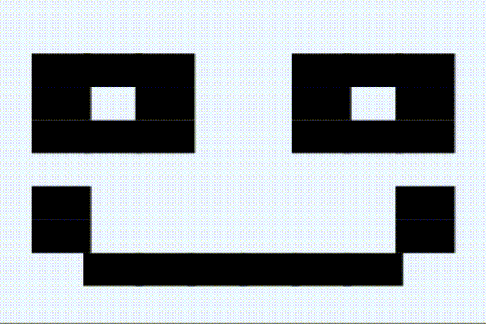

StarLight Reference
API
The StarLight Hub communicates over Bluetooth LE. This allows direct control over the individual LEDs.
Data to the StarLight Hub is presented in a specific pattern. The pattern consists of three parts:
- Delay sets the frame rate for the sequence being sent to the StarLight Hub.
- Frames are grouping of commands that signify which lights are to be activated at a given point in the squence.
- Frame ends are used to separate different sequences from each other. This allows animations to be achieved.
Example
<01000013 ff000001 7ff00000 18ff0000 028ff000 0032ff00 00033ff0 000036ff 0000037f f0000058 ff000006 1ff00000 72ff0000 073ff000 0075ff00 000f0f13 ff000003 2ff00000 33ff0000 036ff000 0037ff00 00058ff0 000061ff 0000072f f0000073 ff000007 5ff00000 ff>The above example translates into a 10x9 grid with an sequence of:
<010000...The first 6 bits represent the delay between frames.
The pattern afterwords is repairing 8 bits. The first two bits are the light index on the strands. The last 6 bits are the hex representation of a color. The above example is red (#FF0000).
Frames are then separated by the first two bits, typically the light index, being 'FF'. This represents the end of a frame. After this, the StarLight Hub will present a delay, initially set at the beginning of the sequence, and move to the next frame. The StarLight Hub will continue to repeat as necessary.
License
Licensed under MIT License.